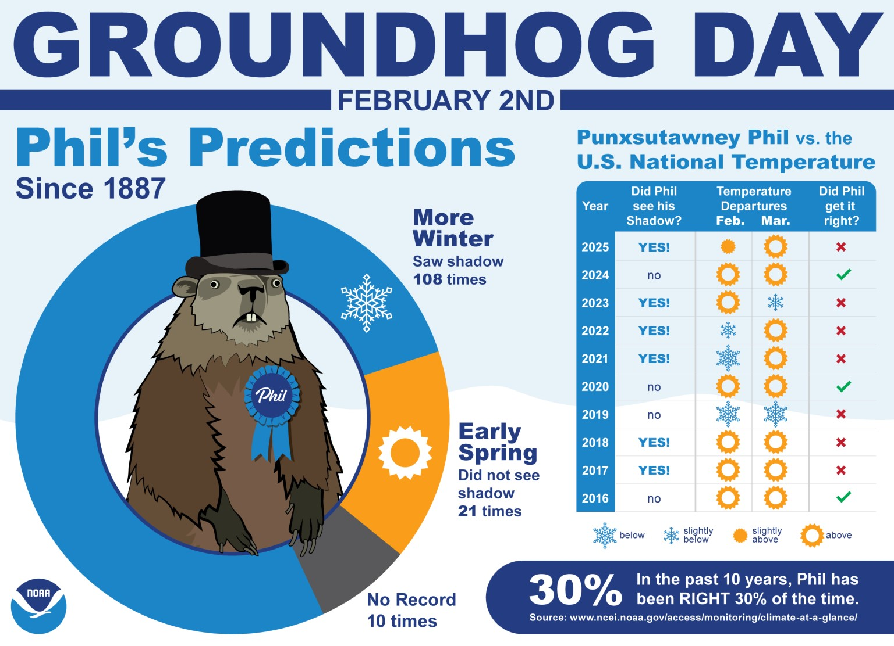

This is going to come as a shock to everyone reading, but the first time that Phil was incorrect according to the Nation Oceanic and Atmospheric Administration was his first prediction back in 1887.

While for some his prediction rang true, the backlash has led to deniers to prop up and search for their own creatures to prognosticate.